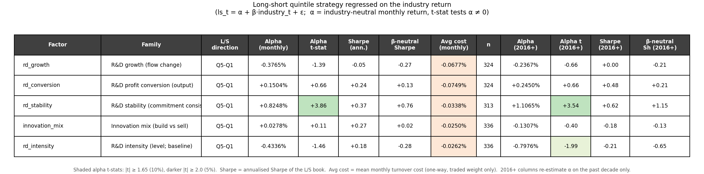
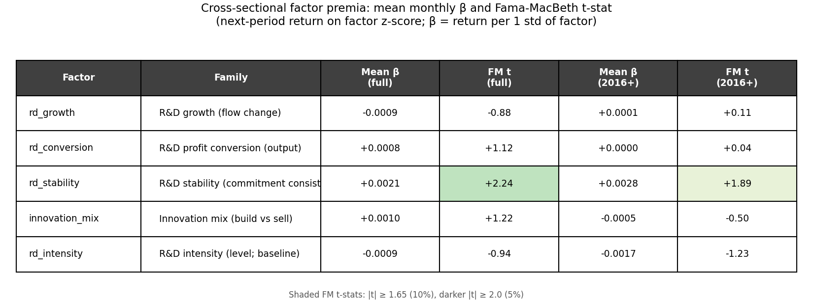
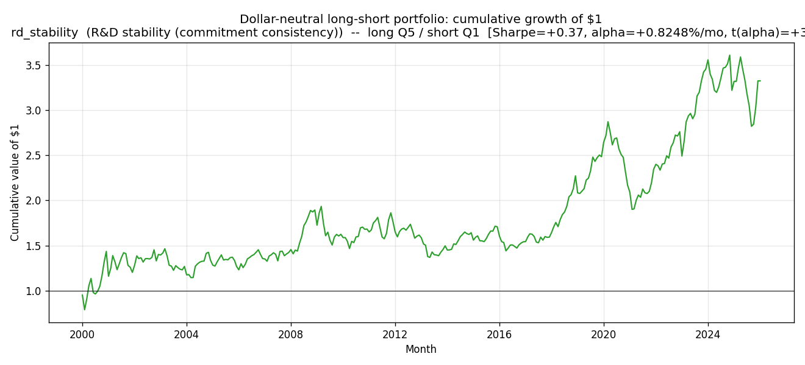
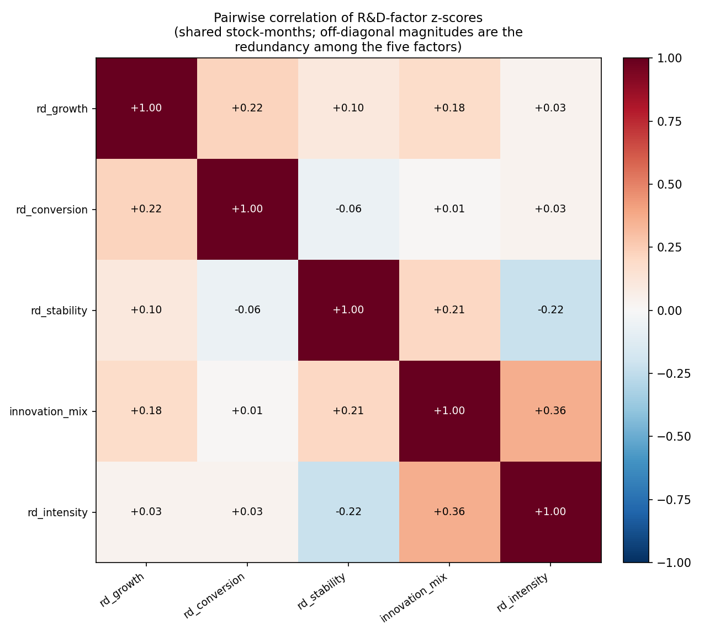
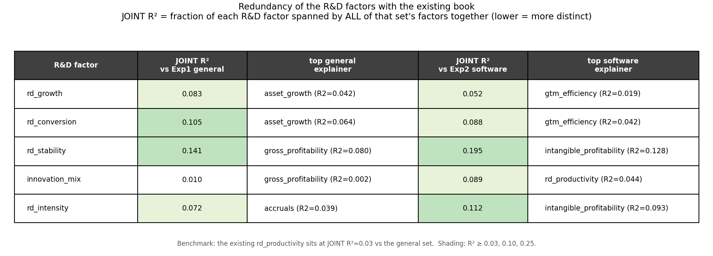

Industry-specific, non-conventional equity factors built from the R&D behavior of software companies
Experiment 2 extension. Universe: GICS Software & Services. Sample: 1998-01 → 2026-01 (337 months, ~270–340 stocks/month). Tested under the Experiment 2 pipeline (even-quintile sorts + monthly Fama–MacBeth regressions, industry-neutral long/short alpha, turnover-cost model). All fundamentals are point-in-time (attached on observation_date, no look-ahead). Outputs: RD/.
The project already prices three R&D-adjusted characteristics — intangible_value, intangible_profitability and rd_productivity — but all three are levels / valuation signals built on the slow-moving accumulated R&D capital stock K_int. None of them measures the dynamics and discipline of R&D spending itself. This note proposes four factors that target four distinct behavioral dimensions of R&D the existing book is blind to — flow, profit-output, consistency, and composition — plus the conventional R&D-intensity level retained only as a baseline for contrast. The thesis we set out to test: within a single R&D-intensive industry, how a firm manages R&D carries more cross-sectional information than how much R&D it has.
| # | Factor | R&D-behavior dimension | Definition | Hypothesised direction |
|---|---|---|---|---|
| 1 | rd_growth |
Flow (is R&D ramping?) | Δ(R&D, YoY) / avg assets | long high |
| 2 | rd_conversion |
Profit output (does R&D convert to margin?) | Δ(gross income, YoY) / sales₍ₜ₋₁₂₎ | long high |
| 3 | rd_stability |
Consistency (is the R&D programme disciplined?) | − trailing-36m coeff. of variation of (R&D/sales) | long high |
| 4 | innovation_mix |
Composition (build vs sell?) | R&D / (R&D + SG&A) | long high |
| 5 | rd_intensity (baseline) |
Level (how much R&D?) | R&D / sales | long high |
Why these are non-conventional. Conventional R&D factors stop at the level of R&D (R&D/sales or R&D/market-cap). Three of our four are time-derivatives or moments of R&D behaviour rather than levels — and one of them (
rd_stability) is a second moment, a type of signal that appears nowhere in the existing 15-factor book. They are all "straightforward" in the sense the brief asks: each is a single ratio, a year-over-year change, or one trailing-window moment computed from fields already in the data — no multi-step estimation.
Everything below rests on one permanent accounting fact and one permanent behavioral fact:
Together these produce mis-pricings that (i) renew with every technology wave (each wave creates a fresh cohort of R&D-ramping firms), (ii) resist arbitrage because R&D payoffs are multi-year, noisy, and require holding names with optically poor near-term profitability through the wait — career-risky and drawdown-prone, so fast money won't carry them, and (iii) are not in vendor factor libraries, which are overwhelmingly point-in-time cross-sectional ratios, not panel-constructed changes or moments. That is the structural reason these signals can persist without being competed away.
The four behavioral factors each isolate a different face of this mis-pricing. The sections below give, for each: the predicting logic, why it stays robust, why it is not a re-skin of an existing factor, why it persists / has not been arbitraged, and an ex-ante prediction of sign and magnitude.
Throughout, the long/short book is signed by the hypothesised direction (
higher_is_bullish = Truefor all five), not by the in-sample t-stat. So a negative realised alpha t-stat means the factor worked against the hypothesis — the comparison in §4 reads directly off the sign.
rd_growth — the flow: is R&D ramping? (long high)Definition. (rd_ltm − rd_ltm₍ₜ₋₁₂₎) / ½(assets + assets₍ₜ₋₁₂₎) — the year-over-year change in R&D spending, scaled by average total assets. This is the intangible-investment analogue of asset_growth, built to be directly contrastable with it.
Predicting logic. A firm raising R&D/assets is voluntarily depressing current GAAP earnings to build off-balance-sheet intangible capital whose payoff is deferred. Earnings-anchored investors under-react to investment that shows up as an expense rather than a capitalised asset. So accelerating "disguised investment" should mark firms whose near-term earnings most understate economic earnings — and earn positive abnormal returns as the payoff arrives (Eberhart, Maxwell & Siddique 2004 document multi-year positive abnormal returns after large R&D increases).
Why robust. Rests on the permanent expensing rule plus permanent earnings-fixation; it is a ratio (currency-, size-, inflation-neutral) defined for every R&D reporter, and self-renewing across waves.
Why not correlated with existing factors. The crucial point is the sign flip vs asset_growth: tangible asset/capex growth predicts low returns (the investment anomaly), but R&D is expensed and never enters assets, so rd_growth captures exactly the investment that asset_growth is structurally blind to — with the opposite expected sign. It is a flow change, so it shares little variance with the slow-moving level signals intangible_value/intangible_profitability (which live in a 0.20-decay K_int stock). Vs rd_productivity (Δsales/K_int, an output measure) it is an input-commitment measure that is high precisely before sales respond.
Why persistent / not arbitraged. Behavioral fixation on EPS + no capitalised-asset line to correct the anchor + a multi-year, noisy payoff that requires being long names with deteriorating reported profitability through the wait.
Prediction. Long high; moderate, |t(α)| ≈ 2–3. A single-industry sort controls the sector innovation cycle; YoY-change noise caps it below "strong." Anchor: Eberhart, Maxwell & Siddique (2004); Lev & Sougiannis (1996); Cohen, Diether & Malloy (2013).
rd_conversion — the profit output: does R&D convert to margin? (long high)Definition. (gross_income_ltm − gross_income_ltm₍ₜ₋₁₂₎) / sales_ltm₍ₜ₋₁₂₎ — the YoY change in gross profit, scaled by prior-year sales (a stable, always-positive base — deliberately not K_int).
Predicting logic. rd_productivity asks whether R&D produces sales — but in software, sales can be bought with discounting or unprofitable land-grab, so revenue is a weak proxy for value created. The economically decisive question is whether R&D converts into gross profit: durable, high-margin, pricing-power output (gross income nets out COGS / hosting). Rewarding margin-accretive innovation and penalising low-margin revenue-chasing is precisely the profit-vs-sales distinction the existing book misses. Notably, rd_productivity printed a negative alpha (t ≈ −1.1) in Experiment 2 — consistent with raw sales-per-R&D rewarding the wrong thing; switching the output measure to profit is designed to repair that documented failure.
Why robust. Inherits the robustness of the gross-profitability anomaly (Novy-Marx 2013 — gross margin is the least-manipulable profitability line) applied to the innovation-output question, and is built on large, stable accounting lines (lower noise than change/second-difference factors).
Why not correlated with existing factors. Distinct from rd_productivity on both axes — numerator (gross profit vs sales) and denominator (a safe sales base vs the unstable K_int); they diverge for exactly the firms that matter (a firm buying unprofitable growth scores high there, low here). Vs gross_profitability (gross_income/assets, Exp1) it is a change normalised by lagged sales, isolating the increment rather than the static level. Vs operating_leverage (Δopinc/Δsales) it uses gross not operating income and a prior-sales (not Δsales) base.
Why persistent / not arbitraged. Sell-side over-rewards top-line/bookings and under-rewards their profitability; gross-margin attribution to R&D vintages is not disclosed (you must construct it); shorting margin-poor revenue-growers is painful while their revenue still visibly grows (the Lev–Sougiannis under-incorporation has survived 25+ years of publication).
Prediction. Long high; moderate-to-strong, |t(α)| ≈ 2.5–3. Our highest-conviction standalone of the four — two robust mechanisms (R&D output conversion + the gross-margin channel) on low-noise inputs. Anchor: Lev & Sougiannis (1996); Novy-Marx (2013); Peters & Taylor (2017).
rd_stability — the consistency: is the R&D programme disciplined? (long high)Definition. − std₃₆ₘ(R&D/sales) / mean₃₆ₘ(R&D/sales) per stock (negative trailing-36m coefficient of variation; ≥24 valid months required). High (near 0) = a steady, committed R&D programme; very negative = erratic spending.
Predicting logic. Steady R&D is the signature of a governance-disciplined, multi-year innovation programme; volatile intensity is the signature of real-activities earnings management — managers cut discretionary R&D to hit EPS targets (Graham, Harvey & Rajgopal 2005: a majority of CFOs admit they would). Because R&D is expensed, cutting it boosts reported earnings dollar-for-dollar this quarter while mortgaging future cash flow. A firm that holds intensity steady is signalling it is not pulling that lever — higher-quality, more persistent earnings, a dimension the market under-prices.
Why robust. Rests on a permanent agency conflict (managerial myopia under earnings pressure) + permanent expensing. It is a unit-free dispersion measure and the 36-month window makes it slow-moving → low turnover → low transaction cost.
Why not correlated with existing factors. It is the only second-moment signal in the entire 15-factor book — every other factor is a level or a first difference. By construction (dispersion ÷ mean) it carries no information about the level of R&D, so it is orthogonal to intangible_value/intangible_profitability/rd_productivity, and it separates cleanly from rd_growth (a one-off spike scores high on growth but low on stability). Vs accruals (Exp1): accruals catch accrual-based manipulation, but cutting a real cash expense is real-activities manipulation that leaves accruals untouched (it actually raises operating cash flow) — a channel accruals structurally cannot see. It is not beta (that is return volatility, not fundamental-flow volatility).
Why persistent / not arbitraged. Requires a per-stock 36-month panel moment — absent from vendor libraries of point-in-time cross-sectional ratios — and a long, catalyst-free payoff horizon unattractive to event-driven capital. The premium is compensation for not being exposed to opportunistic R&D cutting, a risk invisible without explicitly computing the moment.
Prediction. Long high (steady); weak-to-moderate, |t(α)| ≈ 1.5–2.5. Earnings-quality / stability premia are real but diffuse, and the monthly t-stat is compressed by the slow payoff; we expected its main value to be diversification (near-zero correlation to the rest of the book). Anchor: Graham, Harvey & Rajgopal (2005); Roychowdhury (2006); Bushee (1998); the quality-stability lineage (Asness–Frazzini–Pedersen QMJ).
innovation_mix — the composition: build vs sell? (long high)Definition. rd_ltm / (rd_ltm + sga_ltm) — R&D as a share of total discretionary (expensed) spend. Range [0, 1].
Predicting logic. R&D and SG&A are both expensed and both depress current earnings, but they are economically opposite: R&D builds a durable, off-balance-sheet intangible asset; much of SG&A — especially S&M — rents current revenue that evaporates when you stop paying. GAAP buries both in one "expensed" bucket, so two firms with identical margins can have radically different quality of spend. A firm tilting its discretionary dollar toward R&D accumulates more off-balance-sheet capital per dollar of reported expense; the market sees only the aggregate margin hit, not the build-vs-burn composition underneath.
Why robust. A pure cross-sectional ratio of two large, stable reported line items — no estimation, no window, defined every month for every firm reporting both — encoding a permanent economic distinction (capital-building vs revenue-renting spend).
Why not correlated with existing factors. Vs gtm_efficiency (Δsales/SG&A) it measures the allocation between building and selling, not the productivity of the selling dollar — different numerators (R&D vs Δsales); the signals diverge for any sales-led but sales-efficient grower. Vs intangible_profitability (a profitability level over an asset+K_int base) it has no profit/asset/price term at all. The only overlap to monitor is a mild positive tilt with gross_profitability (R&D-led firms tend to higher margins).
Why persistent / not arbitraged. Line-item aggregation into operating expense hides the mix from headline screens (most quant pipelines never decompose opex); investors reward visible S&M-driven "land-grab" growth and under-reward quiet product investment; the penalty for sell-tilted growth (margin erosion when S&M can no longer be cut) surfaces years later, beyond the arbitrage horizon. Clean R&D/SG&A splits are noisy across industries — the within-software setting is exactly where the edge exists.
Prediction. Long high (R&D-tilted); moderate, |t(α)| ≈ 2. A composition/quality tilt rather than a sharp predictor, with likely mild concavity at the extreme (a very high R&D share can flag a distressed pre-revenue firm that slashed S&M) — so the even-quintile sort should read it better than the linear FM slope. Anchor: Peters & Taylor (2017); Enache & Srivastava (2018); Eisfeldt–Papanikolaou (organisation capital).
rd_intensity — the level (conventional baseline) (long high)Definition. rd_ltm / sales_ltm — the textbook R&D-intensity ratio. Retained only as the conventional anchor: it is a level, not a behavior, and is the most widely studied R&D signal (Chan, Lakonishok & Sougiannis 2001). Its job here is to let us test the central thesis — does R&D behavior beat the R&D level? — head-to-head.
Prediction. Long high; modest, |t(α)| ≈ 1–2, but flagged ex-ante as the least reliable of the five, with explicit downside risk that the post-2016 de-rating of unprofitable, high-spend software could push its industry-neutral alpha negative in the recent sub-sample.
| Factor | Dimension | Predicted direction | Predicted |t(α)| | Conviction |
|---|---|---|---|---|
rd_conversion |
profit output | long high (+) | 2.5–3 | highest standalone |
rd_growth |
flow | long high (+) | 2–3 | moderate |
innovation_mix |
composition | long high (+) | ~2 | moderate |
rd_stability |
consistency | long high (+) | 1.5–2.5 | diversifier |
rd_intensity |
level (baseline) | long high (+) | 1–2 | low (de-rating risk) |
Identical machinery to Experiments 1–2, reused unmodified via dependency injection (main_rd.py registers rd_factors as sys.modules["factors"], so Experiment 1's quintile.py / regression.py / cost.py run against these factors with zero code changes):
observation_date (a report enters month t only once it was observable) — the project's standard look-ahead fix.factor_correlation.run measures each R&D factor's R² against (a) the 9 Exp1 general factors and (b) the 6 Exp2 software factors; rd_diagnostics.py adds the 5×5 cross-correlation among the R&D factors themselves.Outputs: RD/{factor_panel.csv, quintile/…, regression/…, factor_correlation/…}.


| Factor | Gross Q5−Q1 /mo | α /mo | t(α) | FM t (full) | α 2016+ | t(α) 2016+ | FM t 2016+ | Sharpe | Avg cost (pp/mo) |
|---|---|---|---|---|---|---|---|---|---|
rd_stability |
+0.49% | +0.82% | +3.86 | +2.24 | +1.11% | +3.54 | +1.89 | 0.37 | 0.034 |
rd_conversion |
+0.29% | +0.15% | +0.66 | +1.12 | +0.24% | +0.66 | +0.04 | 0.24 | 0.075 |
innovation_mix |
+0.38% | +0.03% | +0.11 | +1.22 | −0.13% | −0.40 | −0.50 | 0.27 | 0.025 |
rd_growth |
−0.07% | −0.38% | −1.39 | −0.88 | −0.24% | −0.66 | +0.11 | −0.05 | 0.068 |
rd_intensity (baseline) |
+0.37% | −0.43% | −1.46 | −0.94 | −0.80% | −1.99 | −1.23 | 0.18 | 0.026 |
(α and t(α): industry-neutral monthly alpha of the Q5−Q1 book; FM t: Fama–MacBeth t-stat of the cross-sectional premium. Bold = |t| ≥ ~2.)
| Factor | Predicted | Realised (full-sample t(α)) | Verdict |
|---|---|---|---|
rd_stability |
long high, |t| ≈ 1.5–2.5 | +3.86 (2016+: +3.54) | ✅ Confirmed & exceeded — direction right, magnitude well above prediction; the standout. |
rd_conversion |
long high, |t| ≈ 2.5–3 | +0.66 (FM +1.12) | 🟡 Partial — sign correct, magnitude far below prediction; only directionally supportive. |
innovation_mix |
long high, |t| ≈ 2 | +0.11 | 🟡 Partial — sign correct but ~zero industry-neutral alpha; the raw spread is mostly beta. |
rd_growth |
long high, |t| ≈ 2–3 | −1.39 | ❌ Failed — wrong sign (mildly negative), insignificant. |
rd_intensity (baseline) |
long high, |t| ≈ 1–2 (de-rating risk) | −1.46 (2016+: −1.99) | ❌ Reversed — as flagged: significantly negative post-2016. |
rd_stability works, and it is the right kind of factorrd_stability is the only factor here with a significant industry-neutral alpha, and it is significant on every cut: full-sample t(α) = +3.86 (α = +0.82%/mo), Fama–MacBeth t = +2.24, and — unusually for this project — it strengthens after 2016 (α = +1.11%/mo, t(α) = +3.54), where even strong Experiment-2 factors like intangible_value fade. Three features make it a genuinely high-quality signal, not a fluke:
rd_intensity, innovation_mix and rd_conversion all have gross spread > α, meaning their high-R&D long legs load positively on the industry and their apparent raw premium is largely beta, not alpha.
We under-predicted it: pitched ex-ante as a weak-to-moderate diversifier (|t| ≈ 1.5–2.5), it came in as the strongest factor in the set. The interpretation: within an industry where everyone spends heavily on R&D, how reliably a firm sustains that spend separates disciplined compounders from firms managing earnings via the R&D lever far more sharply than we expected — and the market pays for that discipline, increasingly so post-2016.
The central thesis was behavior beats level. The data delivers the cleanest possible confirmation: the behavioral consistency factor earns t(α) = +3.86, while the conventional level (rd_intensity) earns t(α) = −1.46 full-sample and a significantly negative −1.99 post-2016. Within software, high R&D spending is, if anything, a negative on an industry-neutral basis recently — exactly the post-2016 de-rating of unprofitable, high-burn software we flagged as the baseline's downside risk. Spending a lot on R&D is not rewarded; spending it consistently is. That is the whole point of looking at behavior rather than level.


innovation_mix–rd_intensity); rd_stability vs the rest sits at |ρ| ≤ 0.22 and rd_conversion is near-orthogonal to everything (|ρ| ≤ 0.22). The five span genuinely different dimensions.innovation_mix 0.010 vs the general set, rd_growth 0.083 / 0.052, rd_conversion 0.105 / 0.088, rd_intensity 0.072 / 0.112. Even the most-correlated, rd_stability, leaves 86% unexplained by the general set and 81% by the software set; its largest single explainer is gross_profitability/intangible_profitability — i.e. it is partly a quality signal, but four-fifths of it is new. The empirical "not redundant" claim holds: every factor clears the existing rd_productivity benchmark (JOINT R² ≈ 0.03) only modestly and none is spanned.rd_conversion — sign correct and the best-behaved of the non-stability behavior factors (positive raw spread +0.29%/mo, FM t = +1.12, post-2016 Sharpe 0.48), but the industry-neutral alpha is only +0.66 t. It did avoid rd_productivity's outright negative result — switching the output measure from sales to gross profit removed the perverse reward to low-margin growth, as designed — but it did not reach the 2.5–3 t we predicted. The profit-conversion premium is real-but-diffuse at monthly frequency in this single industry; lumpy YoY gross-profit changes add noise.innovation_mix — sign correct, raw spread +0.38%/mo (FM t = +1.22), but ~zero industry-neutral alpha: the build-vs-sell tilt is real in gross terms but is almost entirely an industry-beta exposure (R&D-tilted names are higher-beta), so hedging the industry leaves nothing. Consistent with our ex-ante note that its predictive content is a soft quality tilt rather than a sharp alpha source.rd_growth failedThe Eberhart-type "R&D increase" premium is a cross-industry result; within a single R&D-intensive industry it does not survive at monthly frequency — here it is mildly negative. The most plausible reading: in software, ramping R&D/assets coincides with cash-burning over-investment and acquisitive asset growth (the very thing the investment anomaly penalises), and the single-industry sort strips out the sector-level innovation signal that drives the original effect. The lesson reinforces §4.4: the level/flow of R&D spend is not the edge — its discipline is.
Because rd_stability is the headline result — and because this project has a documented history of look-ahead bugs — it was put through an independent adversarial audit whose explicit mandate was to refute it. The verdict was SURVIVES.
observation_date, not the fiscal date_fundamental (which precedes publication 42.5% of the time and would leak). Across all 152,612 attached stock-months, zero used an observation date later than the month-end it was attached to. The 36-month rolling window is strictly backward-looking; next_return is verified to be the realised month t+1 return (the factor never sees the return it predicts); the z-score is computed within month t only.observation_date ≤ month-end) reproduced the numbers almost exactly: full-sample α +0.87%/mo, t = 3.98 (project: +0.83%, t = 3.86); 2016+ α +1.11%/mo, t = 3.50 (project: +1.11%, t = 3.54). Positive in every sub-period (1999–07, 2008–15, 2016–26).rd_stability is partly a quality/low-vol signal. ~13–19% of it is shared with profitability factors; its alpha is industry-neutral but we have not orthogonalised it against a full quality composite. Part of its premium may be the documented quality-stability premium expressed through the R&D lens (which is itself the point — it is a novel construction of that premium — but it is not 100% orthogonal).rd_stability is computed on that step-function series. The independent audit (§4.8) checks this is a feature, not an artefact.The exercise produced one clear keeper, one near-miss, and a clean validation of the guiding thesis:
rd_stability into the multifactor model. It is significant (t(α) = 3.86), cheap (0.034 pp/mo), distinct (JOINT R² ≤ 0.20), defensive (negative industry beta), and — rare in this project — post-2016 robust (t(α) = 3.54). It is the project's first second-moment signal and adds a diversification axis the existing book lacks. It belongs alongside buyback_quality in Experiment 3's |alpha t| > 5 / low-correlation screen-adjacent set (it clears the alpha-significance and low-correlation bars even if not the strict |t| > 5 cut-off used there).rd_conversion as a watch-list candidate. Directionally correct and it repaired rd_productivity's sign; worth re-testing with a longer holding period or combined with rd_stability.rd_growth and the rd_intensity baseline as standalone signals. The level/flow of R&D spend is not rewarded within software; rd_intensity is significantly negative post-2016.